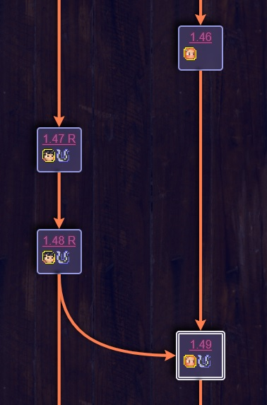

This page hopes to be a newbie-friendly guide for people who are still in the middle of reading The Wandering Inn and are wondering when particular characters or plot threads will pick back up.
Wondering when Ryoka will show up again? Or maybe you're wondering when she'll go away? Hopefully, this has the answers you're looking for. My hope is that this visual guide will tell you how long you can defer reading a chapter for before plot points from other arcs start showing up.
A common--and valid--criticism of TWI is that sometimes, you'll be reading about something that grips you, when suddenly the next chapter jumps to a POV that's totally unrelated, and goes on for quite a while with no clear link to the original story. This can be very jarring you're really vibing with someone then get forced into someone else's POV, leaving you anxious about when it's going to go back to the cool person.
My hope is that a visual guide like this will help you curate your own experience when reading. Don't like the character whose side story interrupted Erin's crucial chess game? Find the continuation of the chess game at a glance, and see when the other character's story becomes relevant to Erin's! Then once you've had your fill of Erin, decide whether to go back to that character's POV, or skip it entirely!
Let's say Erin is busy planning a party, and in the middle of it, the story jumps to an unrelated story about Shrek rampaging through Celum. This guide aims to help you follow Erin's party arc through, letting you put off the Shrek arc until he rampages his way to Liscor and joins the party. On the timeline, Erin's party and Shrek's rampage will be depicted as separate vertical timelines, ultimately leading to a single node with arrows pointing towards it from both the Erin and Shrek lines.
At this point, you can opt to go back to the Shrek arc and read that one through uninterrupted, or if it's really not clicking with you, you can skip it entirely.
If you mean that it's not perfect, that's true of any book. But if you mean "TWI needs to be trimmed down", I don't necessarily agree. TWI is, for better or worse, its own extended universe, and I personally think it's great that in this day and age, an entire fictional universe on the scale of the Star Wars extended canon can exist, but under the purview of a single author, driven by a consistent (albeit evolving) vision.
That said, I recognize that asking people to read something of this length is a huge huge ask, and some people simply don't have the time to consume a world so large. This would be akin to requiring every person who goes to see an Avengers movie to first see the entire canon of Marvel Cinematic Universe content, which is obviously unreasonable. I would much rather someone skip chapters and keep going, rather than butt their heads against a brick wall and stop reading entirely. Part of the reason I made this site in the first place is because I saw this exact problem crop up way way too many times.
Good question. This is NOT the TWI wiki. That is, it is NOT an obsessive chronicling of every single detail about the story. I do not think, for instance, we will ever see or mention Errif Jealwind on this timeline, unless he somehow does something extremely amazing in a chapter that gets published after I write this.
The double-bordered nodes are NOT summaries of those chapters, they are quick catch-up tips containing things that people new to the series might need to know if they skipped one of the threads leading up to it!
This is a highly subjective matter, so I can't give you an objective criteria. However, my top priority is to make it friendly for new readers, so that should be the guiding principle. Can a new reader follow a line without getting lost? Prioritize a line with a continuous arc, rather than creating a new line for every individual character--for example, if it switches from Erin to Ryoka, but Ryoka is in the same place, participating in the exact same events, keep her in the same thread rather than splitting her off into her own timeline. If she runs off to Baleros after that and doesn't interact with Erin again except via chat messages? Yeah, split that sucker off.
Again, prioritize the experience for a new reader who may want to skip or defer a chapter/arc. Yes, it's possible that one thread spoils another thread, but this is acceptable to me.
Well, I'm not gonna read all however-many-words this story currently is in order to fill in the timeline! That's a massive job and what I'm begging you all to help with! The format for an entry looks like this, and I am accepting both contributions for chapters that haven't been listed, and modifications for chapters that have. The full file for data is here: https://github.com/cmarguel/twiline/blob/master/timeline.yml
I would prefer contributions in the form of pull requests, if you know how. However, if you don't know how to use git, you can also chat me up on the TWI discord.
The format for an entry in the timeline is as follows (this may change in the future as more features are added) and whether you contribute via git or via chat, I need all contributions to be in this format. This is a case-sensitive list, which means that the capitalization of letters should be carefully considered:
-
title: "Interlude - Shrek's Revenge"
url: "http://wanderinginn.com/some/fake/url/to/the/chapter"
prereqs: ["25.33 R", "55.6 S"]
rank: 1
povs: [erin, shrek]
guests: [ryoka]
from: Interlude - The Great Ritual
jump: true
catchup: >
Shrek rampaged through Celum, heading south, and now sees Liscor in the
distance. Meanwhile, Erin is done with her party plans and is about to
commence the festivities.
The attributes are as follows:
Eagle-eyed code reviewers may notice an art attribute as well. Don't worry about that, it's all on me and I'll add those as I see fit. It's for the decorative art you may see floating around.
Mainly? Frontend stuff. Offhand:
The github page is at: https://github.com/cmarguel/twiline I accept contributions. Please help!